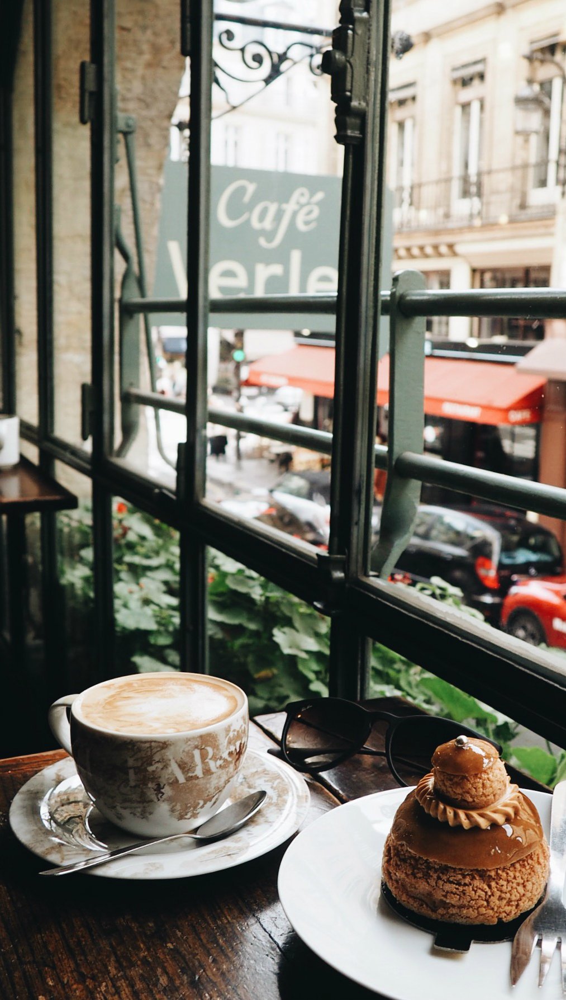
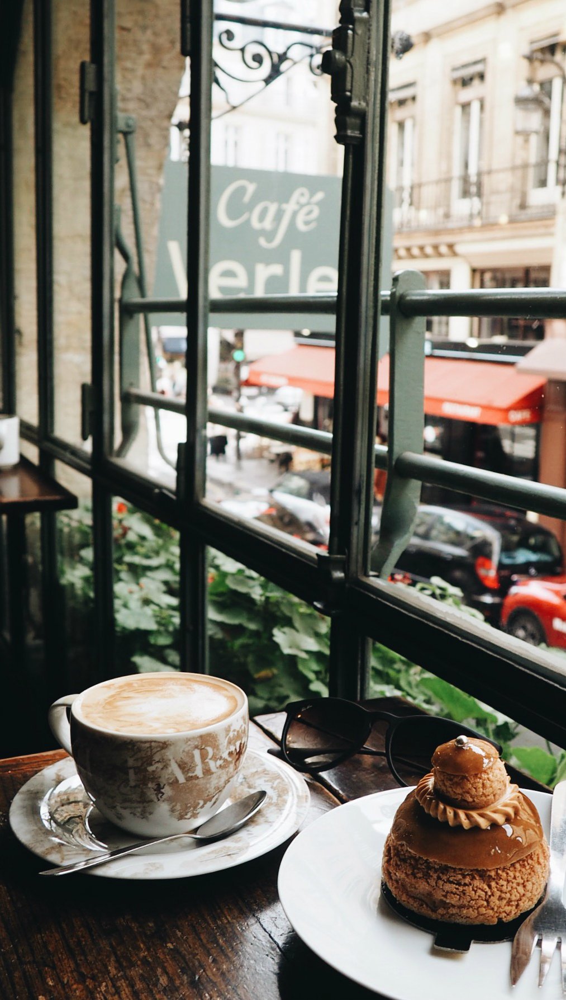

این شروع داستان ماست
لورم ایپسوم متن ساختگی با تولید سادگی نامفهوم از صنعت چاپ و با استفاده از طراحان گرافیک است چاپگرها و متون بلکه روزنامه و مجله در ستون و سطرآنچنان که لازم است و برای شرایط فعلی تکنولوژی مورد نیاز و کاربردهای متنوع با هدف بهبود ابزارهای کاربردی می باشد کتابهای زیادی در شصت و سه درصد گذشته حال و آینده شناخت فراوان جامعه و متخصصان را می طلبد


 
